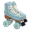
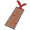

Key Or Trap ルール
目次
ルーム設定
- ゲームルール
- マップの広さ
- 折り返し
- エンチャント
- ダイス
20/30/40/50から大きさを選択できる。初期は30。
マップの右端をゴールにするか、そこで折り返し左端をゴールとするかどうかを選択できる。
初期にランダムでマスにエンチャントを行うかどうかを選択できる。
ダイス移動が選択可能かどうかを選択できる。
ゲームモード
真っ向勝負 - 効果配置と移動を同時に行うすごろく
いくつかのイベントや効果マスでアイテムを収集しながらゴールを目指す。
1ターンで選択イベント、配置、移動を行う。
特殊マスは1つしか配置出来ない。
決まったターン数まで配置は可能で、それ以降は配置できない。
KOTコイン2個がターン開始時に配布される
ゴールに先にたどり着けば勝ち。
準備万端 - マップを完成させてから移動を行うすごろく
配置と移動のフェーズが分かれており、コストを消費してマスを設置したあとに移動を開始する。
特殊マスは1つしか配置出来ない。
また設置のフェーズ最後には、コストを消費して鍵のアイテムも購入できる。
全プレイヤーが鍵のアイテム購入を終了すると、移動のフェーズに移る。
移動のフェーズでは、ダイスかスキルの使用ができる。
配置フェーズの順番とは逆で、移動のフェーズは行動する。
ゴールに先にたどり着けば勝ち。
効果マス一覧
| 名前 | 効果 | コスト/レアリティ | 再配置 |
|---|---|---|---|
| Right1 | 右に1マス進む | 1 | 2.5周 |
| Right2 | 右に2マス進む | 2 | 3周 |
| Right3 | 右に3マス進む | 3 | 3.5周 |
| Left1 | 左に1マス進む | 1 | 2.5周 |
| Left2 | 左に2マス進む | 2 | 3周 |
| Left3 | 左に3マス進む | 3 | 3.5周 |
| 名前 | 効果 | コスト/レアリティ | 再配置 | シールド | 次の移動時、止まったマスの効果を無効化する | 1 | 2.5周 |
|---|---|---|---|
| デストロイ | 周囲1マスを破壊する(通常の再配置時間に入る) | 2 | 3周 |
| リーク | ビーコンレーダーを獲得する | 3 | 3.5周 |
| スタック | 次の移動を2マス減少させる | 3 | 3.5周 |
| キー | ランダムなKey系アイテムを獲得する | 4 | 4周 |
| バック | このターンの開始地点に戻る | 4 | 4周 |
| ゲイン | KOTコインを3つ獲得する | 2 | 3周 |
| ウェイスト | KOTコインを3つ失う | 1 | 2.5周 |
| 名前 | 効果 | 解放アイテム | コスト/レアリティ | 再配置 |
|---|---|---|---|---|
| アイテム | ランダムなアイテムを獲得する | ルーレット装置 | 1 | 2.5周 |
| トレーダー | トレードイベントが起こる | 移動販売車 | 2 | 3周 |
| ガード | 周囲3マスにエンチャント:key無効化を展開/収束する(このマスを踏むと切り替わる) | レジャーシート | 4 | 4周 |
| リバイブ | 周囲3マスの再配置時間が2周進む | 復活したバンドのCD | 4 | 4周 |
| イレース | 周囲2マスの範囲にエンチャント:忘却を付与 | 高性能な高圧洗浄機 | 4 | 4周 |
| ブースト | 次の移動が2マス追加される | ローラーシューズ | 4 | 4周 |
| へクス | ランダムな印を獲得する | 不吉な栞 | 1 | 2.5周 |
| 名前 | 効果 | コスト/レアリティ | 再配置 |
|---|---|---|---|
| ライトN | 踏んだら右に1から5マス進む。効果初同時に設置者が選択。 | 5 | 4.5周 |
| レフトN | 踏んだら左に1から5マス進む。効果初同時に設置者が選択。 | 5 | 4.5周 |
| ライト/レフトN | 踏んだら左右に0から2マス進む。効果初同時に設置者が選択。 | 5 | 4.5周 |
| スワップ | 設置者と位置を入れ替える。 | 5 | 4.5周 |
| ドレイン | 設置者に6コスト譲渡する。 | 5 | 4.5周 |
| 名前 | 効果 | コスト/レアリティ | 再配置 |
|---|---|---|---|
| ミステリー | ミステリーイベントがランダムで起こる | 1 | 2.5周 |
| 通常マス | 効果を配置できる | X | 2周 |
アイテム一覧
60種類ぐらいある
ノーマルアイテム
| 画像 | アイテム名 | 効果 | 入手方法 | 割り当て |
|---|---|---|---|---|
 |
映画のチケット | ミステリーイベントで選ばれるアイテムを1/2/3/...回まで再抽選できる(1枚消費) | Itemマス | 通常系/消費 |
 |
金属製の盾 | エンチャント:ロストで優先的に消費される | Itemマス、選択イベント | 通常系/消費 |
 |
ビーコンレーダー | 自分の周囲1/2/3/...マス以内にある効果マスを公開する（自分の効果マスは対象外） | Leakマス、Itemマス、選択イベント | 通常系/永続 |
 |
領収書 | ミステリーイベントの通過イベントで、成功確率が5/10/15/...%上昇する | Itemマス、選択イベント | 通常系/永続 |
| マイク | ミステリーイベントで、選択できる選択肢と通過イベントの試行回数が1/2/3/...回上昇する | Itemマス、選択イベント | 通常系/永続 | |
 |
飛行機の搭乗券 | ミステリーイベントの通過イベントで、失敗時に10.0/19.0/27.1/...%の確率で支払ったアイテムを返却する | Itemマス、選択イベント | 通常系/永続 |
| 手帳 | ミステリーイベントの通過イベントで、失敗時に増加するボーナス確率が+1/2/3...%上昇する | Itemマス、選択イベント | 通常系/永続 | |
 |
メンバーズカード | トレードイベントで、割引された価格の鍵系アイテムの取引が2つ追加される確率が10.0/19.0/27.1/...%上昇する。 | Itemマス、選択イベント | 通常系/永続 |
| フェライトコアコイル | 消失中の通過したマスの再配置時間が1/2/3/...ターン増加される。 | 限定取引 | 限定系/永続 | |
 |
電解コンデンサ | 消失中の通過したマスの再配置時間が1/2/3/...ターン減少される。 | 限定取引 | 限定系/永続 |
 |
ラッキーサングラス | Itemマスでもらえるアイテムを1/2/3...個追加。 | ミステリーイベント | 限定系/永続 |
 |
鍵鋳造キット | 次の移動時に、10.0/19.0/27.1/...%の確率でランダムで鍵がもらえる。 | ミステリーイベント | 限定系/永続 |
| 手提げバック | トレードイベントで選ばれるアイテムの獲得上限を1/2/3/...追加する。(初期:2) | ミステリーイベント | 限定系/永続 | |
 |
ブラックボックス | トレードイベントで選ばれるアイテムの獲得下限を1/2/3/...追加する。(初期:1、獲得上限は超えない) | ミステリーイベント | 限定系/永続 |
 |
スーツケース | ゴールができるように、進行方向反転 | 折り返しマス | 限定系/永続 |
アドオンアイテム
| 画像 | アイテム名 | 効果 | 入手方法 | 割り当て |
|---|---|---|---|---|
 |
フルーツリキュール | 配置する際にエンチャント:短縮再配置を付与（1つ消費） | Itemマス、選択イベント | 配置系/消費 |
 |
ウィスキー | 配置する際にエンチャント:スキル無効化を付与（1つ消費） | Itemマス、選択イベント | 配置系/消費 |
 |
テキーラ | 配置する際にエンチャント:忘却を付与（1つ消費） | Itemマス、選択イベント | 配置系/消費 |
 |
エナジードリンク | 配置する際にエンチャント:x2を付与（1つ消費） | Itemマス、選択イベント | 配置系/消費 |
 |
サクサクポテチ | 配置する際にエンチャント:強制停止を付与（1つ消費） | Itemマス、選択イベント | 配置系/消費 |
| ごみ袋 | 配置する際にエンチャント:ロストを付与。(1つ消費) | Itemマス、選択イベント | 配置系/消費 | |
 |
リンゴジュース | 配置する際に消費するKOTコインを0にする（1つ消費） | Itemマス、選択イベント | 配置系/消費 |
 |
エンチャント送信回路 | 配置する際に任意のエンチャントを付与する（1つ消費） | Keyマス、Itemマス | 配置系/永続 |
 |
1kΩの抵抗器 | 消失した状態で配置を行い、ターン終了時に復活させる（1つ消費） | 限定取引 | 限定系/消費 |
追加効果アイテム
| 画像 | アイテム名 | 効果 | 入手方法 | 割り当て |
|---|---|---|---|---|
 |
移動販売車 | 効果マス：Traderを配置可能に この効果は全体に公開された状態で配置される（1つ自動消費） | Itemマス、選択イベント、Traderマス | 追加マス系/消費 |
 |
復活したバンドのCD | 効果マス：Revaivalを配置可能に この効果は全体に公開された状態で配置される（1つ自動消費） | Itemマス、選択イベント、Traderマス | 追加マス系/消費 |
| ルーレット装置 | 効果マス：Itemを配置可能に この効果は全体に公開された状態で配置される（1つ自動消費） | Itemマス、選択イベント、Traderマス | 追加マス系/消費 | |
 |
レジャーシート | 効果マス：Guardを配置可能に この効果は全体に公開された状態で配置される（1つ自動消費） | Itemマス、選択イベント、Traderマス | 追加マス系/消費 |
 |
高性能な高圧洗浄機 | 効果マス：Eraseを配置可能に この効果は全体に公開された状態で配置される（1つ自動消費） | Itemマス、選択イベント、Traderマス | 追加マス系/消費 |
|  | ローラーシューズ | 効果マス：Boostを配置可能に この効果は全体に公開された状態で配置される（1つ自動消費） | Itemマス、選択イベント、Traderマス | 追加マス系/消費 |
|  | 不吉な栞 | 効果マス：Hexを配置可能に この効果は全体に公開された状態で配置される（1つ自動消費） | Itemマス、鍵鋳造キット、Traderマス | 鍵系/消費 |
影響アイテム
| 画像 | アイテム名 | 効果 | 入手方法 | 割り当て |
|---|---|---|---|---|
 |
影響中：逆転 | ダイスや鍵の移動時、進行方向に影響を与える。奇数個で逆方向、偶数個で順方向。（次の移動で全消費） | Backマス、'反転'の鍵、'異変'の鍵 | 影響系 |
 |
影響中：スキル使用禁止 | 鍵の使用を禁止する。個数は、持続ターン数を示す。 | エンチャント:スキル無効化、'禁止'の鍵 | 影響系 |
 |
影響中：推進 | 次の移動が2マス増加。個数は、持続ターン数を示す。 | Boostマス、'推進'の鍵 | 影響系 |
 |
影響中：抑制 | 次の移動が2マス減少。個数は、持続ターン数を示す。 | '抑制'の鍵、'制御'の鍵 | 影響系 |
 |
影響中：効果無効 | 次の移動で、マスの効果とエンチャントの影響を受けない。個数は、持続ターン数を示す | Shieldマス、'守護'の鍵 | 影響系 |
 |
影響中：帰還 | 次の移動が終了したとき、移動前の位置に戻る。個数は、持続ターン数を示す。 | '帰還'の鍵 | 影響系 |
| 影響中：青の印 | 移動-1(効果重複なし) | Hexマス | 影響系 | |
| 影響中：黄の印 | ターン開始時にもらえるKOTコインが1に固定される(効果重複なし) | Hexマス | 影響系 | |
| 影響中：緑の印 | トレイダーのアイテム数-3(効果重複なし) | Hexマス | 影響系 | |
| 影響中：紫の印 | 選択イベントのアイテム数が1固定される(効果重複なし) | Hexマス | 影響系 |
解放アイテム
| 画像 | アイテム名 | 効果 | 入手方法 | 割り当て |
|---|---|---|---|---|
 |
0 の鍵 | スキル:0の宣言を解放する。ダイスを振らず、0を宣言でき、移動しない | Itemマス、鍵鋳造キット、Traderマス | 鍵系/消費 |
|
ダイス の鍵 | スキル:ダイスを解放する。ダイスを降って進む | Itemマス、鍵鋳造キット、Traderマス | 鍵系/消費 |
|
復活 の鍵 | スキル:マス復活を解放する。任意のマスを復活させる | Itemマス、鍵鋳造キット、Traderマス | 鍵系/消費 |
|
消失 の鍵 | スキル:マス消失を解放する。任意の効果マスを再配置されない状態で消失させる | Itemマス、鍵鋳造キット、Traderマス | 鍵系/消費 |
|
放電 の鍵 | スキル:放電を解放する。指定マスのエンチャントを消す。 | Itemマス、鍵鋳造キット、Traderマス | 鍵系/消費 |
|
異変 の鍵 | スキル:方向異変を解放する。自分以外が次の移動時、進行方向を反転して進む | Itemマス、鍵鋳造キット、Traderマス | 鍵系/消費 |
|
公開 の鍵 | スキル:マス公開を解放する。指定したマスを全員に公開する | Itemマス、鍵鋳造キット、Traderマス | 鍵系/消費 |
|
推進 の鍵 | スキル:推進力を解放する。 次の移動が2マス増加する | Itemマス、鍵鋳造キット、Traderマス | 鍵系/消費 |
|
経過 の鍵 | スキル:時間経過を解放する。 全てのマスの再配置時間が3周進む。 | Itemマス、鍵鋳造キット、Traderマス | 鍵系/消費 |
|
帰還 の鍵 | スキル:アクション＆アウェイを解放する。 次の移動が終了したとき、移動前の位置に戻る | Itemマス、鍵鋳造キット、Traderマス | 鍵系/消費 |
|
禁止 の鍵 | スキル:ロックを解放する。 自分以外の鍵の使用を禁止する | Itemマス、鍵鋳造キット、Traderマス | 鍵系/消費 |
|
守護 の鍵 | スキル:保護シールドを解放する。 この移動で、マスの効果とエンチャントの影響を受けない | Itemマス、鍵鋳造キット、Traderマス | 鍵系/消費 |
|
制御 の鍵 | スキル:全体制御を解放する。 自分以外の次の移動が2マス減少する | Itemマス、鍵鋳造キット、Traderマス | 鍵系/消費 |
|
浄化 の鍵 | スキル:クリアを解放する。 自分以外の次の移動が2マス減少する | Itemマス、鍵鋳造キット、Traderマス | 鍵系/消費 |
エンチャント一覧
効果マスに対する副次的な効果で、このマスに効果があるとき二のみ効果がある。
| エンチャント名 | 効果 |
|---|---|
| 強制停止 | このマスに効果があるとき、通過しようとしたプレイヤーは強制的に停止し効果を受ける このマスの再配置時間は5周。 |
| 短縮再配置 | このマスの配置時間が半分に短縮される |
| 忘却 | このマスの効果とエンチャントを消し、通常マスにする |
| スキル無効化 | このマスに対するスキルの使用とこのマスの効果を受けた場合、2周スキルを無効化する |
| x2 | このマスの効果を2倍にする(ただし、再配置時間も2倍になる) |
| ロスト | このマスの効果を受けたとき、ランダムなアイテムを1-4個失う |
イベント一覧
選択イベント
- 限定系アイテム以外のアイテムの中からランダムに2つのアイテムが選ばれる。個数もランダム(初期では最高2つ)。
ランダムアイテムイベント
- すべてのアイテムからランダムで１つアイテムが選ばれる。（ラッキーサングラスで増える）
- Itemマスの効果
トレードイベント
- アイテムを購入、売却できるイベント。トレードイベントでしか購入できないアイテムもある。
- メンバーズカードがあると、限定価格の鍵の取引が2個追加される可能性がある。
購入-限定取引
| 電子部品アイテム | 3 COIN |
|---|---|
| 電子部品アイテム | 3 COIN |
通常取引
| 効果マス追加アイテム | 3 COIN | |
|---|---|---|
| 鍵系アイテム | 12 COIN | |
| 鍵系アイテム | 12 COIN | |
| 鍵系アイテム | 10 COIN | メンバーズカード追加 |
| 鍵系アイテム | 10 COIN | メンバーズカード追加 |
※電子部品アイテムは、フェライトコアコイル、電解コンデンサ、1kΩの抵抗器
※効果マス追加アイテムは、ルーレット装置、移動販売車、復活したバンドのCD、高性能な高圧洗浄機、レジャーシート、ローラーシューズ
ミステリーイベント
- 話しかける相手を選ぶ選択肢（確定）
- トレーダー
- 休憩しているおじいさん
- 話しかける相手を選ぶ選択肢（ランダム - マイクで選択肢は増える）
- 配達員 「未知の物」
- 買い物に来た主婦 「増量キャンペーン」
- 修理屋 「勝利の鍵」
- サングラスのお金持ち 「お金持ち気分」
- 金属の鎧をまとった人 「なんでも守れる金属」
トレーダーイベントが始まる
ランダムアイテムイベントが始まる
KOTコインを1枚ずつ捧げてランダムなイベントを成功させるとアイテムがもらえる。
成功確率:12%
失敗時増加確率:2%
試行可能回数:8
イベント通過でブラックボックス獲得ができるイベント
成功確率:10%
失敗時増加確率:5%
試行可能回数:6
イベント通過で手提バックが獲得ができるイベント
成功確率:5%
失敗時増加確率:8%
試行可能回数:6
イベント通過で鍵鋳造キットが獲得ができるイベント
成功確率:2%
失敗時増加確率:10%
試行可能回数:8
イベント通過でラッキーサングラスが獲得ができるイベント
成功確率:70%
失敗時増加確率:10%
試行可能回数:2
イベント通過で金属の塊が獲得ができるイベント